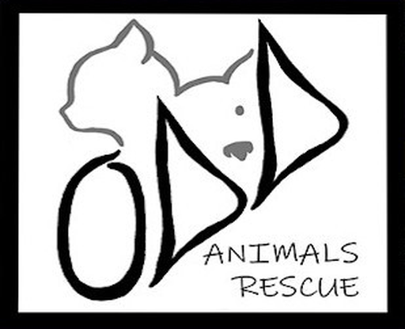

404 Page not found
This page has wandered off.
Like a black cat at midnight, it was here a moment ago. The link may be old, or the address mistyped. Lucky for you, the rest of us are still here.

Donate404 Page not found
Like a black cat at midnight, it was here a moment ago. The link may be old, or the address mistyped. Lucky for you, the rest of us are still here.